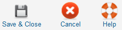

Edit your group or add new ones from that screen. With groups you can limit the ability to add events to categories, to selected users. Only members of this group can add events to this category.
Edit your group or add new ones from that screen. With groups you can limit the ability to add events to categories, to selected users. Only members of this group can add events to this category.
To access this screen use: Components -> EventList -> Add Group or by clicking a group in the overview
 Super Administrator
Super Administrator  Administrator
Administrator  Manager
Manager

Save: Saves the group and returns to the overview.
Cancel: Cancels the action. Any modification is lost. If an item is opened to edit, the group Item remains checked-in.
Help: Opens this help screen.
Groupname: Enter or edit (if needed) the title of the group here.
Description: Use this field to explain the purpose of the group.
Maintainer: In the left field are all available users listed. You can assign one ore more from them with a doubleclick or the arrow buttons to the group.